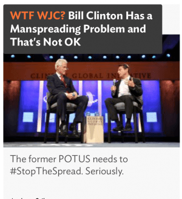

Michael is the author of Staying Married in a Degenerate Age. Follow him on Twitter or Facebook. You can read more of his writing at Honor and Daring.


There’s a new anti-Trump site on the web called Heat Street, that has built its credibility by attacking SJWs. It purports to be “An engaging new destination for news, features, opinion and commentary. Free speech celebrated. No safe spaces.” In reality, it is just another boring attempt by the journalistic establishment to squash the political awakening that is happening in the US.

Rupert Murdoch
I’ll give credit to Heat Street in that they are very open about who owns them. Knowing who owns a media outlet is important as the owner ultimately sets the editorial direction. Just as you would not expect a website run by Roosh to push feminism, you would not expect a website run by Jeb Bush to promote traditional masculinity.
Heat Street is owned by Dow Jones & Company, the same company that owns the Wall Street Journal. Dow Jones & Company, in turn, is owned by Rupert Murdoch’s News Corporation, which also owns Fox News. Not surprisingly, Heat Street has the same editorial slant as the Wall Street Journal and Fox News—a slant that happens to mesh perfectly with the position of the Republican donor class.

There is no doubt that Heat Street was created partially—perhaps entirely—as a response to the popularity of Donald Trump and the rise of the Alt Right. Yet, the creators of Heat Street, like the GOP establishment, seem to be incapable of understanding what is happening in the country.
Republican strategists have never been able to understand why Trump has captured the hearts of the rank and file voters. First, they guessed it was because Trump insulted people, so donor lapdog Marco Rubio was commanded to put the theory to the test. Rubio instantly changed his tone from the carefully scripted, focus group-crafted material to being an insult comic. Of course, people don’t support Trump because he insults people so Rubio’s Lisa Lampanelli routine had the exact opposite of what was intended: Rubio saw his poll numbers plummet while Trump’s rose.
The most recent establishment theory is that Trump is popular because he is a reality show star. Mitt Romney is even trying to draft Mark Cuban, host of Shark Tank, into a third party run against Trump. Apparently, it has never crossed the mind of the elites that people support Trump because of his policies to build a wall, curb immigration, and put America first in foreign policy and trade.
In a similar way, the marketers at News Corp. who created Heat Street don’t understand why young people are rejecting the libertarianism of the conservative movement in favor of more radical politics. They seem to believe that people are rejecting conventional politics because they are tired of political correctness, which is why they include “No safe spaces” in their tagline. What they fail to understand is that people are not just tired of political correctness but the entire progressive edifice that it supports.

Louise Mensch – head of Heat Street
Here is a flavor of some of Heat Street’s editorial positions.
Heat Street hates Trump. It is possible that the only reason it was created was to stop Trump from winning the presidency and to serve as a foil to him if he wins. To borrow a phrase from Chesterton, it is almost as if the writers at Heat Street believe that any stick is good enough to beat Trump with. You will not find a single word of praise for Trump within Heat Street.
For inveterate Trump-hater Rick Wilson, Trump spells disaster for noble Republican Party, the Party of Dennis Hastert and Larry Craig:
Standing against his [Trump’s] repellent positions and cancerous candidacy is probably the only way to avoid having the electoral hopes of hundreds of down-ballot Republican candidates consumed in the dumpster fire of his campaign. It’s inconvenient for Trump fans, but not every candidate lives in a deep-red, economically illiterate, violently anti-immigrant, pro-war crime enclave.
In a piece entitled, Miller Time: Donald Trump lied that he was ‘John Miller’ to Spread Misogyny, Heat Street chief Louise Mensch asks “Can the GOP ask any respectable delegate to support this [Trump’s] misogyny?” The hatred continues with a piece criticizing Trump’s penchant for retweeting white supremacists. And of course, Heat Street paints Trump supporters as rabid, threatening, and potentially violent hillbillies.
Racism is probably the most powerful and most overused weapon in the SJW arsenal. Therefore, Heat Street tries to steer a middle path. There are a handful of articles that poke fun of SJWs who claim something is racist when it really isn’t. For example, Heat Street thinks it is ridiculous that some white SJWs are expressing outrage that the black Ghostbusters character is not a professor.
To add a little personalization and “tragic mulatto” street cred, writer Marjorie Romeyn-Sanabria penned a personal piece bemoaning the issue of “colorism.” Colorism, she states is “prejudice against a person who has one black parent and another parent of a different ethnic origin.” Romeyn-Sanabria details the flood of hateful Tweets she received when she mentioned that she did not feel accepted as a “young, biracial woman” on Twitter. Interestingly, all of the tweets seemed to come from one person. Maybe only one person is “colorist.” Terms like “whitesplaining” are also thrown in to make Heat Street readers feel like they are on the cutting edge of SJW lingo.
Heat Street tries to be edgy when it comes to race, but even here, Heat Street breaks no new ground. It does nothing to destroy the SJW straightjacket.
Some countries can limit immigration and some countries can’t.
As you would expect from a sister publication of the Wall Street Journal, Heat Street is pro-immigration. It ran a piece from a professor alleging that Trump’s border wall is no longer needed because most of the Mexicans are now here and that Mexicans in Mexico are having fewer children. Heat Street also carried Lin-Manual Miranda’s address at University of Pennsylvania speech which turned out to be a panegyric to immigrants:
In a year when politicians traffic in anti-immigrant rhetoric, there is also a Broadway musical reminding us that a broke, orphan immigrant from the West Indies built our financial system. A story that reminds us that since the beginning of the great unfinished symphony that is our American experiment, time and time again, immigrants get the job done.

One welcome surprise is that it seems that Heat Street supports Britain’s exit from the EU. This is one area where Heat Street diverges from the globalist agenda that it otherwise adheres to so closely.
Globalists favor eliminating national boundaries because it gets in the way of “free” trade. This is the end game behind NAFTA and TPP. The exit of the UK from the European Union would be a step in a nationalist direction—and nationalism is the opposite of globalism.

Under the makeup, conservatives and liberals are both progressives.
The real problem with Heat Street is that it wants to perpetuate the lie that there are two forces locked in an eternal struggle. One side stands for free markets, free trade, and personal freedom. The other stands for unnecessary regulation and poorly conceived social programs.
The Heat Street version of conservatism (or libertarianism, same thing) supports “lean in” type feminism, but not fat women in pink hair. It is pro-immigration and definitely not racist. It welcomes gays and transgenders if they agree with tax breaks for hedge fund managers, unregulated GMO food, and proxy wars for Israel and Saudi Arabia. It views people not as part of families and nations, but as free-floating, rootless economic units.
The problem with the Heat Street narrative is that the dichotomy between the party of economic freedom and the party of controlled markets is largely false. It is kabuki theatre for the proles. Rhetoric aside, both the Republicans and the Democrats support unlimited free trade, unchecked immigration, and low corporate tax rates. That’s why many CEOs of large corporations are Democrats.
The real divide is between globalism and nationalism. In the US, both parties are in the thrall of globalist donors who place their own needs ahead of the well-being of their fellow countrymen.
In the end, Heat Street fails to understand what is driving voters in 2016. It is not that we want vulgarity or flashy memes, it is that we want to put our own interests first. We want our own countrymen to have good jobs even if it means we pay a little more for our iPhones.
We don’t want to just do away with Trigglypuff-type feminism. We don’t want to go back to second-wave feminism, we want to bring back the patriarchy.
We don’t just want to do away with the racial extremism of the Mizzou protestors. We want to do away with the whole racial animus industry.
We don’t want to live, as John Kerry has stated, a borderless future. Immigration can be good but when it happens on such a large scale that citizens start to feel like they are living in a foreign country, it is time to slow it down.


I asked my wife to read some Heat Street articles to make sure my reading was not too jaundiced. She said that she felt as though there was no passion behind their articles. It was almost as if they were written by people who were covering mandatory points but who didn’t really believe strongly in their own content.
I have to agree. I don’t think I will be spending anymore time at Heat Street.
Read More: John Boehner’s Resignation Shows That Cuckservatives Are In Full Retreat